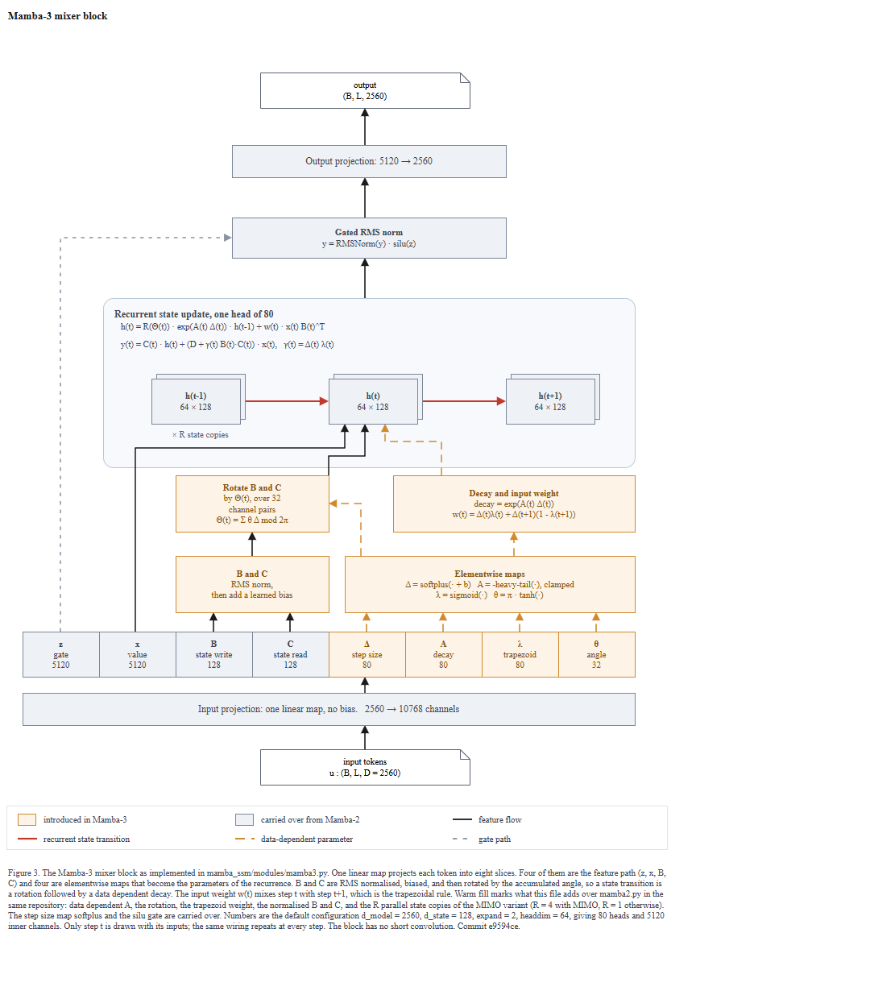
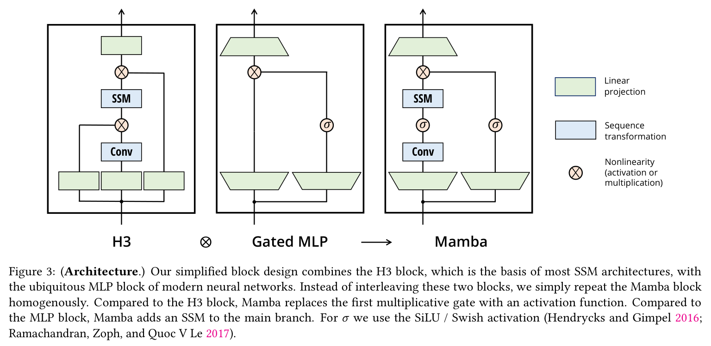

← 전체 목록 · T1M-4 · T1-M
Mamba-3 — 상태공간 시퀀스 블록
스킬 개발에 사용하지 않은 저장소이다. 저장소 코드만 입력으로 사용하였고, 정답지는 실행 종료 후 대조 목적으로만 열었다.
블라인드 조건
- 저장소에 세 세대의 코드가 함께 있다: Mamba, Mamba-2, Mamba-3. 어느 것을 그릴지는 코드가 정하게 뒀다.
- README 가 링크한
assets/selection.png·assets/ssd_algorithm.png·assets/mamba3.png는 열지 않았다. 리포트 기록:the paper, the author figures, and the images that README.md links were not opened.
rev-parse --show-toplevel이 대상 폴더와 일치하는 것을 먼저 확인한 뒤 캡션에e9594ce를 넣었다.- 결과적으로 정답지와 다른 세대를 그렸다. 정답지는 Mamba-1 논문의 Figure 3(H3 ⊗ Gated MLP → Mamba)이고, 산출물은
mamba3.py의 믹서 블록이다. 리포트에 그 선택과 이유를 적었다.
프롬프트
Scout 신규 세션에 아래 내용만 입력하였다. 무엇을 그릴지는 지정하지 않았다.
/method-figure
C:\Users\youngseolee\OneDrive - Microsoft\Desktop\work\code\paper-trail\eval\demo\repos\mamba
이 저장소를 읽고 논문 Figure 3 자리에 들어갈 방법론 그림을 만들어줘.
지켜야 할 것:
- 이 저장소의 코드에서만 읽는다. 이 방법의 논문이나 저자 그림, 저장소
README 가 링크한 외부 이미지를 찾아보지 않는다. 무엇을 그릴지는 코드가
정한다.
- 산출물은 전부 이 폴더에 쓴다:
C:\Users\youngseolee\OneDrive - Microsoft\Desktop\work\code\paper-trail\out\demo\mamba\run\
figure.drawio, fig.html, report.md,
evidence.json (evidence.py 가 뽑은 재료 원문),
render.png (최종 그림을 렌더한 PNG),
render-r1.png (독립 시각 게이트를 처음 통과시키기 전 시점의 렌더).
게이트가 한 번에 통과하면 render-r1.png 는 만들지 않아도 된다.
- report.md 에는 돌린 검사의 stdout 을 그대로 붙이고, 게이트마다 통과/실패와
몇 라운드 만에 통과했는지 적는다. 스킬에서 모호했거나 따를 수 없었던 것도
적는다.
실행 경과
캡처 프레임 79장 중 7장을 선별하였다. 좌우 방향키로 이동한다.
게이트 4종 결과
| 게이트 | 결과 | 라운드 | 검출 내용 |
|---|---|---|---|
| ① 렌더 | 통과 | 1 | XML 파싱 + 뷰어 기동 (전용 포트 8907, 파일명 mamba3_blk_q7.html) |
② check_layout.py | ok (엣지 24, 라벨 0) | 2 | 1라운드에 미검증 커밋 1건과 화살표가 도형 위에 칠해지는 레이어 1건. 범례 그룹의 선 견본이 스와치보다 뒤에 선언돼 있었다 |
③ check_render.js | flags: [] | 1 | texts 68 · shapes 27 · edges 26. 첫 시도에 비어 있었다 |
| ③-a 라벨 대조 | 오타 0건 | 1 | XML 라벨을 전부 뽑아 코드 심볼과 1:1 로 대조하였다. nheads = 80, d_state = 128, d_inner = 5120 이 그림·범례·캡션에서 같은 값이다 |
| ④ 독립 시각 게이트 | GATE: PASS | 1 / 3 | A 6항목·B 6항목·C 5항목 전부 PASS, Things to fix: Empty. |
심사자에게는 렌더 PNG 와 검사 원문만 제공하고 보고서·의도·단계 분해는 제공하지 않는다. 자체 점검 항목을 44개까지 확대해도 통과율이 개선되지 않아, 점검 항목이 아니라 판정 주체를 분리하는 방식으로 변경하였다.
최종 산출물
산출물은 이미지가 아니라 draw.io XML 이다. 확대·이동이 가능하며 내려받아 수정할 수 있다.
figure.drawio · report.md · 뷰어 새 창
정답지 대조


| 항목 | 정답지 | 산출물 | 비고 |
|---|---|---|---|
| 무엇을 그렸나 | Mamba-1 블록의 계보: H3 ⊗ Gated MLP → Mamba 3패널 | Mamba-3 믹서 블록 하나의 내부 | 정답지가 다른 세대다. 저장소에 세 세대가 다 있고 코드가 골랐다 |
| 박스 안 내용 | SSM, Conv, 사다리꼴 (숫자 없음) | 2560 → 10768, d_state 128, nheads 80, 64 × 128 | T1-M 은 텐서와 설정값을 넣는다. 전부 config_mamba.py 기본값에서 역산된다 |
| 입력 분기 | 선형 투영 두 갈래가 갈라짐 | 한 번의 bias-free 투영 → 여덟 조각 z, x, B, C, Δ, A, λ, θ | torch.split 폭 순서를 그대로 옮겼다 (mamba3.py#L106,L177-L186) |
| 비선형 표기 | 원 안에 ⊗ 글리프 | 원을 쓰지 않고 수식으로: w · x B^T | 세 입력이 곱으로 합쳐지므로 + 원은 틀린 진술이 된다. 관례를 어긴 자리와 이유를 리포트에 적었다 |
| 무엇이 새로운가 | 표시 없음 (세 블록 나란히 두는 것이 비교다) | 따뜻한 색 = mamba3.py 에 있고 mamba2.py 에 없는 것 | 색이 검증 가능한 주장이 됐다. 독자가 두 파일을 열어 확인할 수 있다 |
| 반복 | repeat the Mamba block homogenously(캡션 문장) | 겹친 판 + × R state copies | MIMO rank 를 도형으로 표현하였다. 근거는 mimo_rank·mimo_x/z/o |
| 안 그린 것 | 없음 | 청킹(chunk_size = 64)을 안 그렸다 | 알고리즘 주장이지 블록 구조 주장이 아니라고 판단하고, 그 판단을 리포트에 적었다 |
| 종횡비 | 가로 (3패널 나란히) | 820 × 1192 세로, 아래→위로 읽힘 | 관례 D: 폭보다 높으면 아래→위. Transformer·DINO·MoCo 와 방향이 같다 |